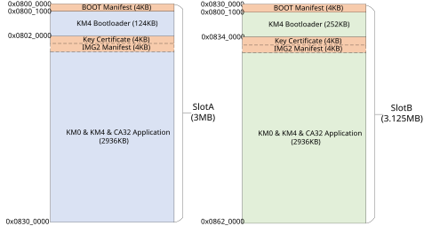
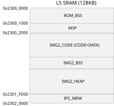
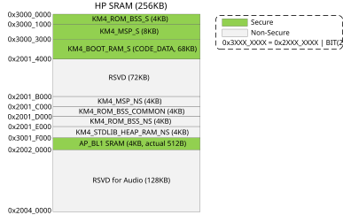
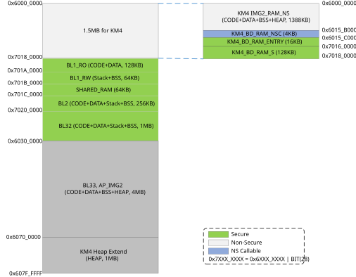

NOR Flash Layout
The default NOR Flash layout used in SDK is illustrated in the following figure and table. The layout takes the 16M bytes Flash as an example. The start address of bootloader is fixed to 0x0800_0000, and other start addresses can be configurable by users flexibly.
{kind=link}

NOR Flash layout
Item |
Physical address |
Size |
Description |
|---|---|---|---|
KM4 Bootloader |
0x0800_0000 |
128KB |
KM4 bootloader manifest and code/data |
Key Certificate, KM0 &
KM4 & CA32 Application
|
0x0802_0000 |
2944KB |
Combines Key Certificate, manifest, KM0_IMG and KM4_IMG2.
|
Note
The SlotB is used for OTA. The reason why SlotB has another 128KB reserved region (0x0832_0000~0x0834_0000) is to be compatible with NAND Flash layout.
For bootloader SlotB, the address, which must be 4KB aligned and can be configured in the OTP, is decided by users.
SRAM Layout
SRAM Layout of LS Platform
The SRAM layout is illustrated in the following figure and table.
{kind=link}

LS SRAM program layout
Item |
Start address |
Size |
Description |
|---|---|---|---|
ROM_BSS |
0x2300_0000 |
4KB |
ROM bss |
MSP |
0x2300_1000 |
4KB |
Main Stack Pointer |
IMG2_RAM |
0x2300_2000 |
119.25KB |
KM0 image2 SRAM, including code, data, BSS and heap |
IPC_MEM |
0x2301_FD00 |
0.75KB |
Buffer for IPC between CPUs |
SRAM Layout of HP Platform
The SRAM layout is illustrated in the following figure and table.
{kind=link}

HP SRAM program layout
Item |
Start address |
End address |
Size |
Description |
Mandatory |
|---|---|---|---|---|---|
KM4_ROM_BSS_S |
0x3000_0000 |
0x3000_1000-1 |
4KB |
ROM Secure-only .bss |
√ |
KM4_MSP_S |
0x3000_1000 |
0x3000_3000-1 |
8KB |
Secure Main Stack Pointer |
√ |
KM4_BOOT_RAM_S |
0x3000_3000 |
0x3000_9000-1 |
24KB |
KM4 Secure bootloader, including data and code |
√ |
RSVD |
0x2000_9000 |
0x2001_B000-1 |
72KB |
Reserved |
× |
KM4_MSP_NS |
0x2001_B000 |
0x2001_C000-1 |
4KB |
Non-secure Main Stack Pointer |
√ |
KM4_ROM_BSS_COMMON |
0x2001_C000 |
0x2001_D000-1 |
4KB |
ROM Secure and Non-secure common .bss |
√ |
KM4_ROM_BSS_NS |
0x2001_D000 |
0x2001_E000-1 |
4KB |
ROM Non-secure common .bss |
√ |
KM4_STDLIB_HEAP_RAM_NS |
0x2001_E000 |
0x2001_F000-1 |
4KB |
ROM STDLIB heap |
√ |
AP_BL1_SRAM |
0x2001_F000 |
0x2002_0000-1 |
4KB |
AP BL1 SRAM |
√ |
RSVD for Audio |
0x2002_0000 |
0x2002_4000-1 |
128KB |
Reserved for Audio |
× |
Note
Because of the TrustZone design, the secure address of KM4 should set the bit[28]. So we use 0x3XXX_XXXX instead of 0x2XXX_XXXX as secure address. Refer to the TrustZone specification for more details.
DRAM Layout
Taking 16MB DRAM as an example, the layout is illustrated in the following figure and table.
{kind=link}

DRAM layout
Item |
Sub-item |
Physical address |
Size |
Description |
Mandatory |
|---|---|---|---|---|---|
KM4 IMG2 |
KM4_IMG2_RAM_NS |
0x6000_0000 |
1388KB |
KM4 image2 SRAM, including code, data, BSS and heap |
√ |
KM4_BD_RAM_NSC |
0x6015_B000 |
4KB |
KM4 Non-secure Callable region |
× |
|
KM4_BD_RAM_ENTRY |
0x6015_C000 |
16KB |
KM4 Non-secure Callable function entry |
× |
|
KM4_BD_RAM_S |
0x7016_0000 |
128KB |
KM4 secure image, including secure code, data, BSS and heap |
× |
|
KM4_DRAM_HEAP_EXT |
0x6070_0000 |
1MB |
KM4 heap extend |
√ |
|
AP IMG |
BL1_RO |
0x6018_0000 |
128KB |
AP BL1 code and RO data |
√ |
BL1_RW |
0x601A_0000 |
64KB |
AP BL1 Stack and BSS |
√ |
|
SHARED_RAM |
0x601B_0000 |
64KB |
AP shared memory for multi-core |
√ |
|
BL2 |
0x601C_0000 |
256KB |
AP BL2 code, data, stack and BSS |
√ |
|
BL32 |
0x6020_0000 |
1MB |
AP BL32 code, data, stack and BSS For FreeRTOS SDK, BL32 is SP_MIN. |
√ |
|
BL33 |
0x6030_0000 |
4MB |
AP BL33 code, data, stack and BSS For FreeRTOS SDK, BL33 is image2 (application). |
√ |
Note
If RDP is not enabled, the KM4_BD_RAM_NSC/KM4_BD_RAM_ENTRY/KM4_BD_RAM_S are non-secure and would be merged into KM4_IMG2_RAM_NS.
For SDK, the image size of BL32 (SP_MIN) is small (< 1MB). User can make use of the remaining memory for other functions if needed.